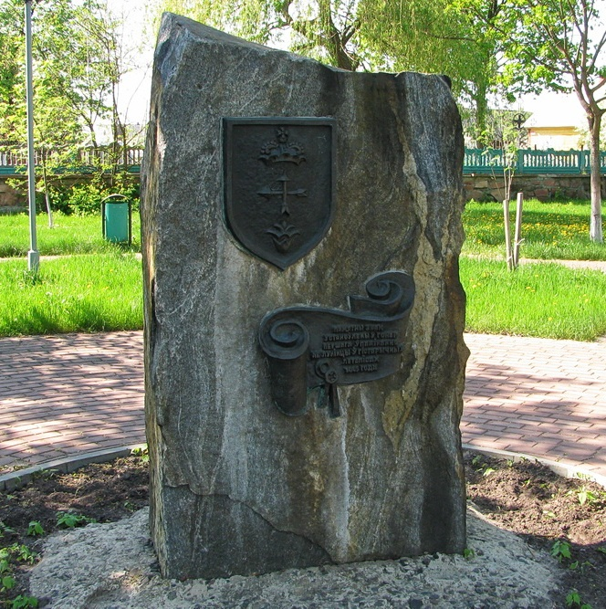

Памятный знак о первом упоминании Лунинца

В память о первом письменном упоминании Лунинца в 1449 году установлен мемориальный камень с гербом города. Первое письменное упоминание о городе Лунинце относится к 1449 г. В это время Лунинец представлял собой типичную полесскую деревню, затерянную среди лесов и болот. Назывался Лунинец тогда несколько иначе: «Малый Лулин». В 1998 году был разработан герб города, который представляет собой варяжский щит, в синем поле которого размещено три изображения: великокняжеская корона, которая является символом славного исторического прошлого Лунинца, некогда входившего в состав Великого княжества Литовского; перекрещенные стрелы – символ железнодорожного узла, которым Лунинец стал в 80-е годы XIX века; стилизованная лилия символизирует уникальность местной флоры, в частности произрастающую на Белом озере и занесённую в Красную книгу Республики Беларусь Лобелию Дортмана.